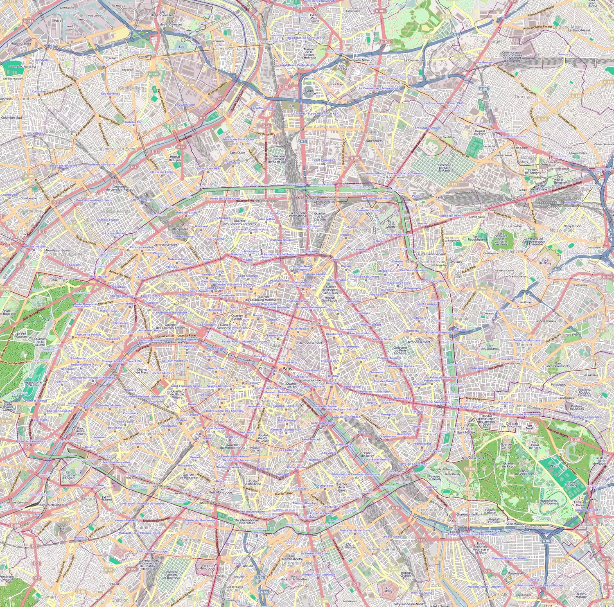
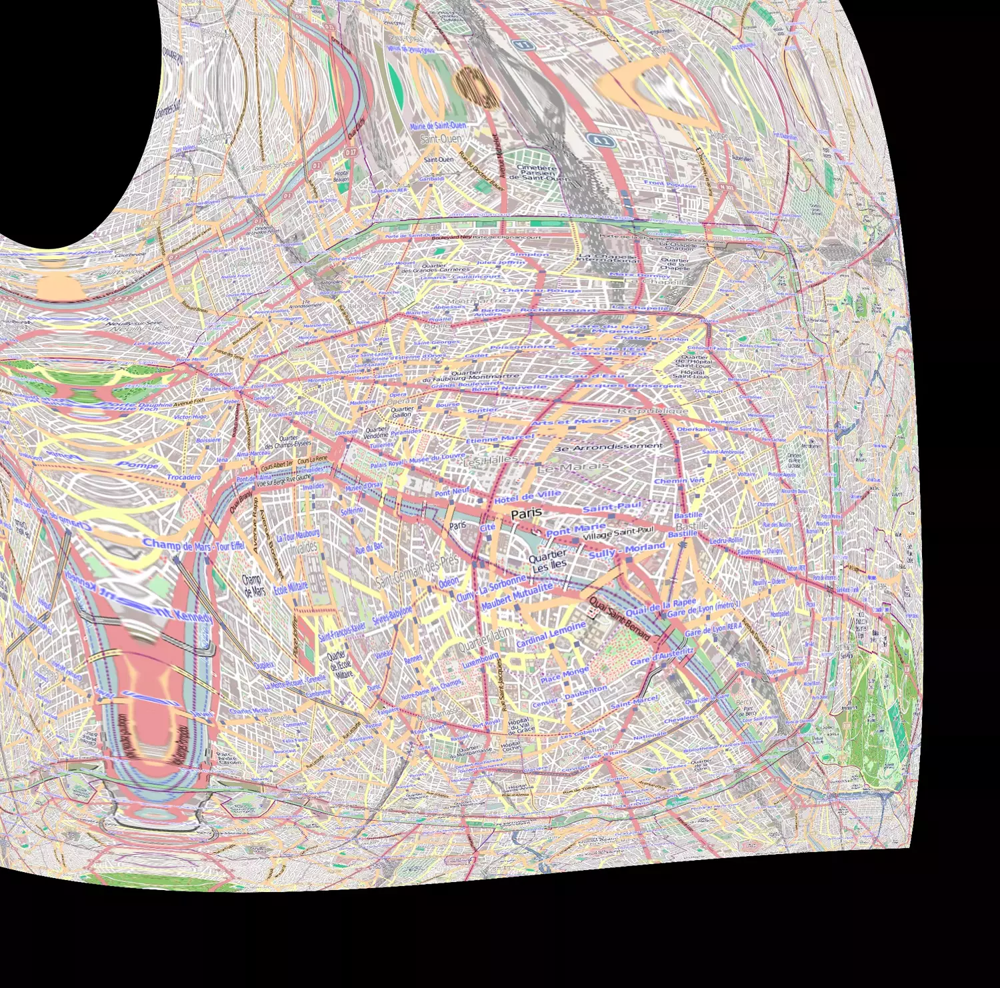
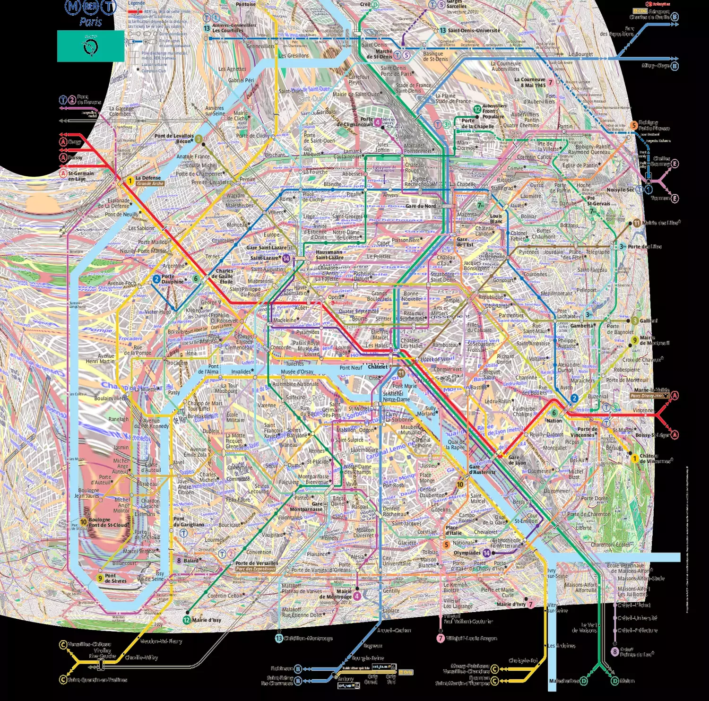

Introduction
Moment historique : La RATP a ouvert ses données horaires ! Avec celles Transilien ouvertes il y a un an, la couverture de Paris et de la petite ceinture est très bonne. Il ne manque plus que les données Optile (réseau d’environ 90 transporteurs) pour avoir des données complètes sur l’Île-de-France.
Allez jeter un coup d’œil à leur site : http://data.ratp.fr/
Pour faire un peu de communication, un hackathon (ou plutôt un concours d’applications) nommé « OpenDataLab » a été organisé ce week-end précédé d’une conférence.
Impressions
J’ai vraiment apprécié les efforts pédagogiques de la RATP pour expliquer comment sont construits les horaires et leur effort d’expliquer le format GTFS des horaires. Même si c’est probablement le format le plus simple et plus simplistes pour représenter des horaires de transport en commun, la prise en main est rude (merci de ne pas avoir fourni du Trident brut ;) ).
Une grande partie des mentors étaient de la RATP, ce qui a permis des échanges informels et très intéressants qu’on a pas l’habitude d’avoir. Je pense que c’est vraiment l’aspect le plus important de ce genre d’évènement et il faudrait trouver une idée pour le faciliter.
Ma réalisation
Entre deux échanges, j’ai fait mon mini-projet utilisant les données de la RATP en mettant une contrainte : ne pas coder, seulement utiliser un tableur (à la grande perplexité de Andrew ;) ). Je pense en effet qu’il est important que l’opendata s’ouvre un peu plus à ceux qui ne veulent pas forcément créer une killer-app.
J’ai donc voulu essayer de reproduire ceci : http://www.fastcodesign.com/1669080/what-if-londons-geography-were-as-distorted-as-its-tube-map
Le plan schématique du métro de la RATP est déformé. Ça lui permet d’être lisible mais les distances ne collent pas. L’idée est donc de déformer une carte réaliste de Paris pour qu’elle colle au plan de la RATP.
C’est bien évidemment parfaitement inutile. C’est avec une très grande minutie que je ne répondais à aucun critère de la grille d’évaluation
- apporter un plus aux voyageurs
- mashup de plusieurs source de données
- être viable
Choix des données
- La position réelles des stations
- La position sur le plan schématique des stations
Ces données sont proposées par la RATP. Il ne reste plus qu’à les fusionner. Pour cela une RECHERCHEV (ou VLOOKUP) dans votre tableur préféré fera l’affaire.
On sait donc faire correspondre les coordonnées à des pixels dans le plan RATP de 8000×8000 pixels (et oui ! il faut lire la doc livrée avec les jeux de données pour savoir ça ;) ).
Choix du plan initial
J’ai pas fait très compliqué, je suis allé sur http://openstreetmap.org, j’ai cliqué sur export, j’ai choisi la zone qui m’intéresse tout en notant les coordonnées de mon export et la taille du fichier obtenu.
Un produit en croix et j’arrive à faire correspondre les pixels RATP et les coordonnées des stations sur les pixels de mon image.
Ainsi je sais que la station Gambetta est aux coordonnées 1500×800 du plan OSM, mais si on utilisait le plan schématique, elle serait en 1600×850.
Après un peu de nettoyage à la main des données qui ne collent pas, j’obtiens un fichier qui contient des pixels avant et après déformation selon le plan schématique RATP.
Appliquer ces transformations
Il ne reste plus qu’à donner ce fichiers de 400 points avant/après à un logiciel de traitement d’image qui va faire la transformation pour nous.
C’est que ça se gâte. Je n’ai pas trouvé d’outil vraiment satisfaisant. Je me suis rabattu sur ImageMagick qui accepte des fichiers d’entrée pour les distorsions.
La seule manière qui donnait des résultats acceptable était la transformation Polynomial qui lisse un peu trop le rendu, n’accentuant pas assez les déformations ponctuelles. Une déformation en Mesh est annoncée, mais pas encore disponible.
Voici le résultat (clic-droit afficher l’image pour l’avoir un plus grand) :



Conclusion
Merci encore à la RATP pour les données et les échanges.
J’ai plus ou moins réussi mon challenge de faire une dataviz basée sur de l’OpenData sans coder.
J’espère juste l’ouverture de ces données ira un peu plus loin d’un évènement ponctuel. La valeur de ces données mérite beaucoup plus qu’une simple application. Il faut impliquer la recherche à plus long terme, il faudrait réussir à enfin créer un écosystèmes d’entreprises qui s’entraideraient et créons des projets artistiques : la RATP c’est le quotidien de millions de personnes, elle nous amène à notre rendez-vous galant, elles nous met hors de nous quand ça se grippe, elle transforme notre vision de la ville, tant de choses à exprimer autrement qu’en HTML5.